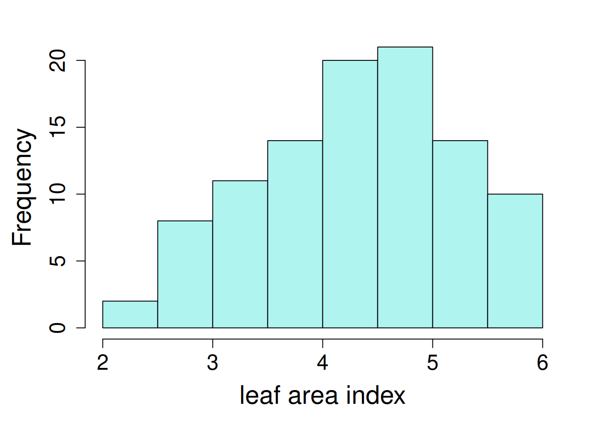
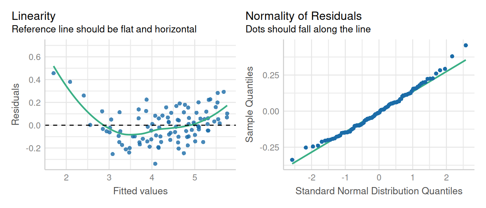
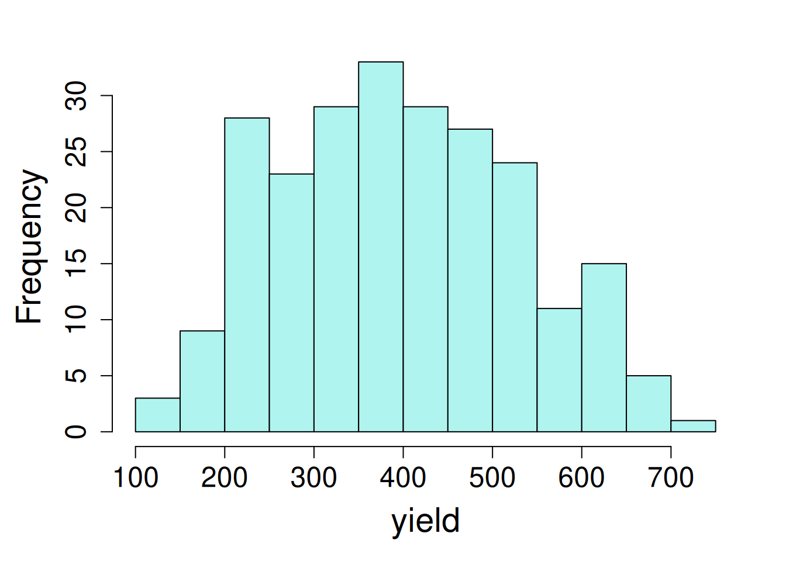
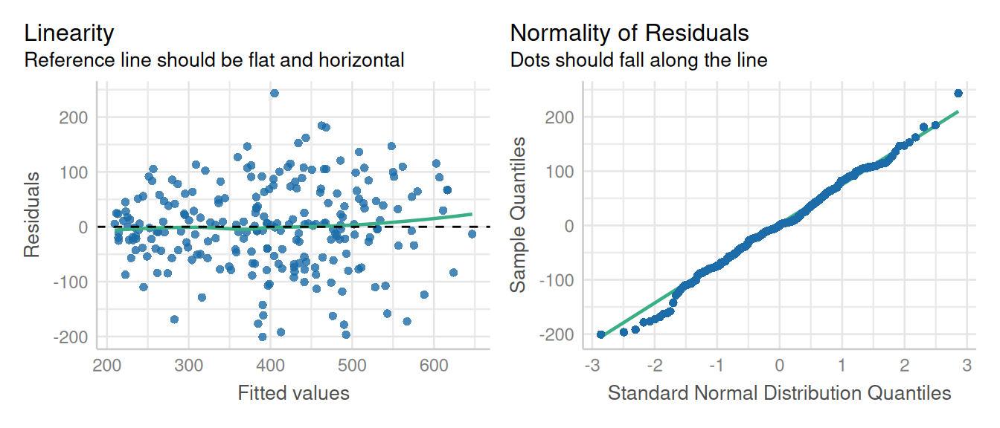
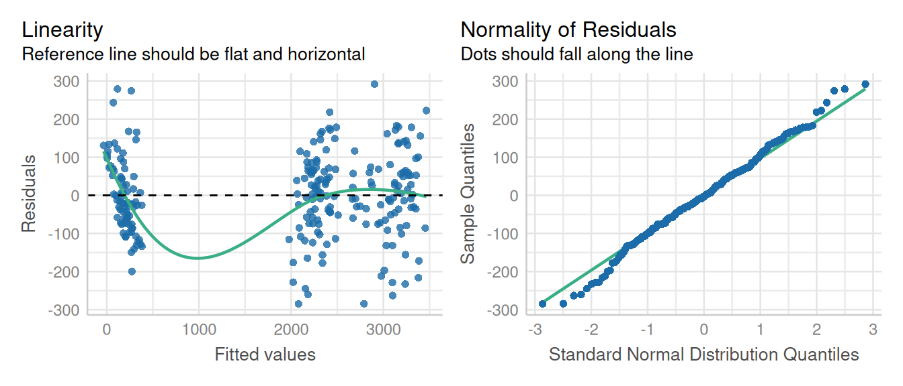

library(nlme); library(performance); library(emmeans)
library(dplyr); library(broom.mixed); library(ggplot2)12 Repeated measures mixed models
In the previous chapters, we have covered how to run linear mixed models for various experimental designs. All the examples in those chapters were independent measure designs, where each subject was assigned to a different treatment. Now we will move on to experiment with repeated measures effects (also called “longitudinal data”).
Studies that involve repeated data collection from the same experimental units (or subjects) requires a repeated measures component in analysis to model correlations across time for each subject. This is common in studies that are evaluated across different time periods. For example, if samples are collected over different time periods from the same subject, we must model the repeated measures effect when analyzing the main effects.
In these models, the ‘iid’ assumption (independently and identically distributed) is often violated, so we need to introduce specialized covariance structures that can account for these correlations between error terms.
Fitting models with correlated observations requires new libraries, including mmrm and nlme. The lme4 package allows random effects only. In this chapter, we will analyze data from different experiment designs with repeated measures including randomized complete block design, split-plot, and split-split plot designs.
There are several types of covariance structures:
| Structure name | nlme function | mmrm function |
|---|---|---|
| Autoregressive (AR1) | corAR1() |
ar1 |
| Compound symmetry | corCompSymm() |
|
| Unstructured | CorSymm() |
To read more about selecting appropriate covariance structure based on your data, please refer to this link.
The repeated measures syntax in nlme follow this convention:
corr = corAR1(value = 0, form = ~ t|g, fixed = FALSE).
The argument for ‘value’ is the starting value for iterations (zero, unless you specify something else), and if fixed = FALSE (the current nlme default), this value will be allowed to change during the model fitting process. The argument structure for form, ~ t or ~ t|g, specifying a time covariate \(t\) and, optionally a grouping factor g (if a group factor is not specified, the observation order will be used). When we use ~t|g form, the correlation structure is supposed to apply only to observations within the same grouping level. The covariate for this correlation structure must be an integer value. Similarly, corCompSymm() and corSymm() follow the same argument syntax.
There are other covariance structures (e.g., corARMA(), corCAR1()), but we have found that corAR1() and corCompSymm() work for most circumstances. Type ?cor in an R console for more options and details on the syntax.
For this chapter, we will be analyzing data using the nlme and mmrm packages. So, let’s start with loading the required libraries for this analysis. These packages have the easiest implementation of heterogeneous error structures. While it is possible to do this with lme4, but it requires extensive comfort programming in lme4.
library(mmrm); library(performance); library(emmeans)
library(dplyr); library(broom.mixed); library(ggplot2)13 Example Analysis
First, we will start with the first example with randomized complete block design with repeated measures.
13.1 RCBD Repeated Measures
The example shown below contains data from a sorghum trial laid out as a randomized complete block design (5 blocks) with variety (4 varieties) treatment effect. The response variable ‘y’ is the leaf area index assessed in five consecutive weeks on each plot.
We need to have time as both a numeric and a factor variable. In the model, to assess the week effect, week was used as a factor (factweek). For the correlation matrix, week needs to be numeric (week).
sorghum <- read.csv(here::here("data", "sorghum.csv")) |>
mutate(block = as.character(varblock),
factweek = as.character(factweek),
variety = as.character(variety))| block | blocking unit |
| Replicate | replication unit |
| Week | Time points when data was collected |
| variety | treatment factor, 4 levels |
| y | leaf area index |
13.1.1 Data Integrity Checks
Let’s do preliminary data check including evaluating data structure, distribution of treatments, number of missing values, and distribution of response variable.
- Check structure of the data
str(sorghum)'data.frame': 100 obs. of 9 variables:
$ y : num 5 4.84 4.02 3.75 3.13 4.42 4.3 3.67 3.23 2.83 ...
$ variety : chr "1" "1" "1" "1" ...
$ Replicate: int 1 1 1 1 1 2 2 2 2 2 ...
$ factweek : chr "1" "2" "3" "4" ...
$ factplot : int 1 1 1 1 1 2 2 2 2 2 ...
$ varweek : int 1 2 3 4 5 1 2 3 4 5 ...
$ varblock : int 1 1 1 1 1 2 2 2 2 2 ...
$ week : int 1 2 3 4 5 1 2 3 4 5 ...
$ block : chr "1" "1" "1" "1" ...In this data, we have block, factplot, factweek as factor variables and y & week as numeric.
- Inspect the independent variables
table(sorghum$variety, sorghum$block)
1 2 3 4 5
1 5 5 5 5 5
2 5 5 5 5 5
3 5 5 5 5 5
4 5 5 5 5 5The cross tabulation shows a equal number of variety treatments in each block.
- Check the extent of missing data
colSums(is.na(sorghum)) y variety Replicate factweek factplot varweek varblock week
0 0 0 0 0 0 0 0
block
0 No missing values
- Inspect the dependent variable
ggplot(data = sorghum, aes(y = y, x = factweek, fill = variety)) +
geom_boxplot() +
theme_bw()Looks like variety ‘1’ has the lowest yield and showed drastic reduction in yield over weeks compared to other varieties. One last step before we fit model is to look at the distribution of response variable.
hist(sorghum$y, main = NA, xlab = "leaf area index")

13.1.2 Model Building
Let’s fit the model first using lme() from the nlme package.
lm1 <- lme(y ~ variety + factweek + variety:factweek,
random = ~1|block/factplot,
data = sorghum,
na.action = na.exclude)The model fitted above doesn’t account for the repeated measures effect. To account for the variation caused by repeated measurements, we can model the correlation among responses for a given subject, which is a plot (factor variable) in this case.
By adding this correlation structure, we are accounting for variation caused by repeated measurements over weeks for each plot. The AR1 structure assumes that data points collected more proximately are more correlated. Whereas, the compound symmetry structure assumes that correlation is equal for all time gaps. Here, we will fit a model with both correlation structures and compare models to find out the best fit model.
In this analysis, the time variable is week, and it must be numeric.
cs1 <- corAR1(form = ~ week|block/factplot, value = 0.2, fixed = FALSE)
cs2 <- corCompSymm(form = ~ week|block/factplot, value = 0.2, fixed = FALSE)In the code chunk above, we fitted two correlation structures including AR1 and compound symmetry matrices. Next we will update the model lm1, with these two matrices.
lm2 <- update(lm1, corr = cs1)
lm3 <- update(lm1, corr= cs2)Now let’s compare how model fitness differs among models with no correlation structure (lm1), with AR1 correlation structure (lm2), and with compound symmetry structure (lm3). We will compare these models by using anova() or by the compare_performance() function from the performance library.
anova(lm1, lm2, lm3) Model df AIC BIC logLik Test L.Ratio p-value
lm1 1 23 18.837478 73.62409 13.58126
lm2 2 24 -2.347391 54.82125 25.17370 1 vs 2 23.18487 <.0001
lm3 3 24 20.837478 78.00612 13.58126 Let’s compare the models performance to select a model that fits better.
result <- compare_performance(lm1, lm2, lm3)Some of the nested models seem to be identical and probably only vary in
their random effects.print_md(result)| Name | Model | AIC (weights) | AICc (weights) | BIC (weights) | R2 (cond.) | R2 (marg.) | ICC | RMSE | Sigma |
|---|---|---|---|---|---|---|---|---|---|
| lm1 | lme | -50.5 (<.001) | -36.0 (<.001) | 9.4 (<.001) | 0.99 | 0.37 | 0.98 | 0.10 | 0.13 |
| lm2 | lme | -77.5 (>.999) | -61.5 (>.999) | -15.0 (>.999) | 0.97 | 0.41 | 0.95 | 0.15 | 0.18 |
| lm3 | lme | -48.5 (<.001) | -32.5 (<.001) | 14.0 (<.001) | 0.98 | 0.37 | 0.98 | 0.11 | 0.14 |
We prefer to chose model with lower AIC and BIC values. In this scenario, we will move forward with lm2 model containing AR1 structure.
Let’s run a tidy() on lm2 model to look at the estimates for random and fixed effects.
tidy(lm2)Warning in tidy.lme(lm2): ran_pars not yet implemented for multiple levels of
nesting# A tibble: 20 × 7
effect term estimate std.error df statistic p.value
<chr> <chr> <dbl> <dbl> <dbl> <dbl> <dbl>
1 fixed (Intercept) 4.24 0.291 64 14.6 5.44e-22
2 fixed variety2 0.906 0.114 12 7.94 4.05e- 6
3 fixed variety3 0.646 0.114 12 5.66 1.05e- 4
4 fixed variety4 0.912 0.114 12 8.00 3.78e- 6
5 fixed factweek2 -0.196 0.0571 64 -3.44 1.04e- 3
6 fixed factweek3 -0.836 0.0755 64 -11.1 1.60e-16
7 fixed factweek4 -1.16 0.0867 64 -13.3 4.00e-20
8 fixed factweek5 -1.54 0.0943 64 -16.3 1.57e-24
9 fixed variety2:factweek2 0.0280 0.0807 64 0.347 7.30e- 1
10 fixed variety3:factweek2 0.382 0.0807 64 4.73 1.26e- 5
11 fixed variety4:factweek2 -0.0140 0.0807 64 -0.174 8.63e- 1
12 fixed variety2:factweek3 0.282 0.107 64 2.64 1.03e- 2
13 fixed variety3:factweek3 0.662 0.107 64 6.20 4.55e- 8
14 fixed variety4:factweek3 0.388 0.107 64 3.64 5.55e- 4
15 fixed variety2:factweek4 0.228 0.123 64 1.86 6.77e- 2
16 fixed variety3:factweek4 0.744 0.123 64 6.06 7.86e- 8
17 fixed variety4:factweek4 0.39 0.123 64 3.18 2.28e- 3
18 fixed variety2:factweek5 0.402 0.133 64 3.01 3.70e- 3
19 fixed variety3:factweek5 0.672 0.133 64 5.04 4.11e- 6
20 fixed variety4:factweek5 0.222 0.133 64 1.66 1.01e- 113.1.3 Check Model Assumptions
check_model(lm2, check = c('linearity','qq', 'reqq'), detrend=FALSE, alpha=0)
13.1.4 Inference
anova(lm2, type = "marginal") numDF denDF F-value p-value
(Intercept) 1 64 212.10509 <.0001
variety 3 12 28.28895 <.0001
factweek 4 64 74.79758 <.0001
variety:factweek 12 64 7.03546 <.0001The ANOVA table suggests a significant effect of the variety, week, and variety x week interaction effect.
We can estimate the marginal means for variety and week effect and their interaction using emmeans() function.
mean_1 <- emmeans(lm2, ~ variety)NOTE: Results may be misleading due to involvement in interactionsmean_1 variety emmean SE df lower.CL upper.CL
1 3.50 0.288 4 2.70 4.29
2 4.59 0.288 4 3.79 5.39
3 4.63 0.288 4 3.84 5.43
4 4.61 0.288 4 3.81 5.40
Results are averaged over the levels of: factweek
Degrees-of-freedom method: containment
Confidence level used: 0.95 mean_2 <- emmeans(lm2, ~ variety*factweek)
mean_2 variety factweek emmean SE df lower.CL upper.CL
1 1 4.24 0.291 4 3.43 5.05
2 1 5.15 0.291 4 4.34 5.96
3 1 4.89 0.291 4 4.08 5.70
4 1 5.15 0.291 4 4.35 5.96
1 2 4.05 0.291 4 3.24 4.85
2 2 4.98 0.291 4 4.17 5.79
3 2 5.07 0.291 4 4.27 5.88
4 2 4.94 0.291 4 4.14 5.75
1 3 3.41 0.291 4 2.60 4.21
2 3 4.59 0.291 4 3.79 5.40
3 3 4.71 0.291 4 3.91 5.52
4 3 4.71 0.291 4 3.90 5.51
1 4 3.09 0.291 4 2.28 3.89
2 4 4.22 0.291 4 3.41 5.03
3 4 4.48 0.291 4 3.67 5.28
4 4 4.39 0.291 4 3.58 5.20
1 5 2.70 0.291 4 1.89 3.51
2 5 4.01 0.291 4 3.20 4.82
3 5 4.02 0.291 4 3.21 4.83
4 5 3.83 0.291 4 3.03 4.64
Degrees-of-freedom method: containment
Confidence level used: 0.95
Time variable
Here is a quick step to ensure you’re fitting model correctly: make sure to have two time variables in your data one being numeric (e.g. ‘day’ as number) and the other being factor/character(e.g. ‘day_factor’ as a factor/character). Where a numeric variable is used for fitting correlation matrix, and a factor/character variable used in model statement to evaluate the time variable’s effect on the response variable.
13.2 Split Plot Repeated Measures
Recall that we evaluated the split plot design in Chapter 7. In this example, we will use the same methodology as in Chapter 7 and update it with a repeated measures component.
Next, let’s load an alfalfa intercropping data set. This data is from an irrigation and intercropping experiment which was conducted in southern Idaho. Irrigation is the main plot, intercropping is the split plot, and the in-season alfalfa cutting (“cutting”) is the unit for repeated measures.
alfalfa <- read.csv(here::here("data/alfalfa_intercropping.csv"))This example contains yield data in a split-plot design. The yield data was collected repeatedly from the same Reps over 5 Sample_times. In this data set, we have:
| cutting | time points for data collection |
| irrigation | Main plot, 2 levels |
| plot | experimental unit |
| block | replication unit |
| intercrop | Split plot, 3 levels |
| yield | crop yield |
| row | spatial position by row |
| col | spatial position by column |
13.2.1 Data Integrity Checks
- Check structure of the data
First, we need to look at the class of variables in the data set.
str(alfalfa)'data.frame': 240 obs. of 8 variables:
$ cutting : chr "First" "Second" "Third" "First" ...
$ irrigation: chr "Full" "Full" "Full" "Full" ...
$ plot : int 1101 1101 1101 1102 1102 1102 1103 1103 1103 1104 ...
$ block : int 1 1 1 1 1 1 1 1 1 1 ...
$ intercrop : chr "50A+50O" "50A+50O" "50A+50O" "75A+25O" ...
$ yield : num 221 355 365 289 606 ...
$ row : int 1 1 1 1 1 1 1 1 1 1 ...
$ col : int 1 1 1 2 2 2 3 3 3 4 ...We will now convert the fertilizer and rep to factors. In addition, we need to create a new factor variable (sample_time1) to analyze the time effect.
For lme(), independent variables in a character/factor form work fine. But, for mmrm(), independent variables must be a factor. Thus, for consistency, we will use independent variables in factor class.
alfalfa <- alfalfa |>
mutate(cut_num = as.numeric(as.factor(cutting))) |>
mutate_at(c("cutting", "irrigation", "plot", "block"), as.factor)To fit the model, we first need to convert Variety, Fertilizer, and Sample_time to factors. In addition, we need to create a variable for each subject which is a ‘plot’ in this case and contains a unique value for each ‘plot’. The plot variable is needed to model the variation in each plot over the sampling time. The plot will be used as a subject with repeated measures. The subject variable can be either a factor or a numeric but the time (could be year, or sample_time) must be a factor.
- Inspect the independent variables
table(alfalfa$intercrop, alfalfa$irrigation)
Deficit Full
100A 12 12
50A+50F 12 12
50A+50F_AR 12 12
50A+50M 12 12
50A+50M_AR 12 12
50A+50O 12 12
50A+50O_AR 12 12
75A+25F 12 12
75A+25M 12 12
75A+25O 12 12Looks like a balanced design with 2 irrigation treatments and 10 intercropping treatments.
- Check the extent of missing data
colSums(is.na(alfalfa)) cutting irrigation plot block intercrop yield row
0 0 0 0 0 3 0
col cut_num
0 0 - Inspect the dependent variable
Before fitting a model, let’s check the distribution of the response variable.

hist(Yield$Yield, xlab = "yield", main = NA)13.2.2 Model fit
This data can be analyzed either using nlme or mmrm.
Let’s say we want to fit a model using AR1 structure as shown in the RCBD repeated measures example. Previously, we used the lme() from nlme package to fit the model. In this example, along with nlme() we will also mmrm() function from the mmrm package. Instead of the summary() function we will use tidy() function from the broom.mixed package to look at estimates of mixed and random effects. This will generate a tidy workflow particularly by providing standardized verbs that provide information on estimates, standard errors, confidence intervals, etc.
corr_str1 = corAR1(form = ~ cut_num|block/irrigation/intercrop/plot, value = 0.2, fixed = FALSE)
fit1 <- lme(yield ~ irrigation*intercrop*cutting,
random = ~ 1|block/irrigation/intercrop/plot,
corr= corr_str1,
data = alfalfa, na.action= na.exclude)13.2.3 Check Model Assumptions
We will use check_model() from the performance package to evaluate the model fitness of model fitted using nlme (mod1). However, the mmrm() model class doesn’t work with performance package, so we will evaluate the model diagnostics by plotting the residuals using base R functions.
check_model(fit1, check = c('linearity', 'qq'), detrend=FALSE, alpha = 0)
These diagnostic plots look fine. The linearity and homogeneity of variance plots show no trend. The Q-Q plots for the overall residuals and for the random effects fall on a straight line so we can be satisfied with that.
13.2.4 Inference
anova(fit1, type = "marginal") numDF denDF F-value p-value
(Intercept) 1 115 157.67647 <.0001
irrigation 1 3 0.17409 0.7046
intercrop 9 54 3.25590 0.0031
cutting 2 115 4.24957 0.0166
irrigation:intercrop 9 54 0.68879 0.7158
irrigation:cutting 2 115 0.35554 0.7016
intercrop:cutting 18 115 1.22854 0.2505
irrigation:intercrop:cutting 18 115 0.77391 0.7263Next, we can estimate marginal means and confidence intervals at different levels of the independent variables using emmeans().
emmeans(fit1,~ cutting)NOTE: Results may be misleading due to involvement in interactions cutting emmean SE df lower.CL upper.CL
First 447 11.3 3 411 483
Second 380 11.4 3 344 416
Third 362 11.5 3 325 398
Results are averaged over the levels of: irrigation, intercrop
Degrees-of-freedom method: containment
Confidence level used: 0.95 emmeans(fit1,~ intercrop)NOTE: Results may be misleading due to involvement in interactions intercrop emmean SE df lower.CL upper.CL
100A 540 19.0 3 480 601
50A+50F 432 19.5 3 370 494
50A+50F_AR 321 19.0 3 261 381
50A+50M 432 19.0 3 371 492
50A+50M_AR 267 19.0 3 207 328
50A+50O 396 19.5 3 334 458
50A+50O_AR 285 19.0 3 225 345
75A+25F 447 19.5 3 385 509
75A+25M 434 19.0 3 374 494
75A+25O 407 19.0 3 347 467
Results are averaged over the levels of: irrigation, cutting
Degrees-of-freedom method: containment
Confidence level used: 0.95 To explore more about contrasts and emmeans please refer to Chapter 13.
13.3 Split-split Plot Repeated Measures
Recall, we have evaluated the split-split experiment design in Chapter 8, where we had one factor in main-plot, other in subplot and the third factor in sub-subplot. In this example,a repeated measures component will be added to the split-split plot model.
phos <- read.csv(here::here("data", "split_split_repeated.csv"))| plot | experimental unit |
| block | replication unit |
| Ptrt | Main plot, 2 levels |
| Inoc | Split plot, 2 levels |
| Cv | Split-split plot, 5 levels |
| time | time points for data collection |
| P_leaf | leaf phosphorous content |
13.3.1 Data Integrity Checks
- Check structure of the data
str(phos)'data.frame': 240 obs. of 7 variables:
$ plot : int 1 1 1 2 2 2 3 3 3 4 ...
$ bloc : int 1 1 1 1 1 1 1 1 1 1 ...
$ Ptrt : chr "high" "high" "high" "high" ...
$ Inoc : chr "none" "none" "none" "none" ...
$ Cv : chr "Louise" "Louise" "Louise" "Blanca Grande" ...
$ time : chr "PT1" "PT2" "PT3" "PT1" ...
$ P_leaf: num 3154 2331 247 3016 2160 ...We need two variables for time, one formatted as a factor and the other numeric.
phos1 <- phos %>%
mutate(
time = as.factor(time),
time_num = as.numeric(time),
rep = as.character(bloc),
plot = as.character(plot)) - Inspect the independent variables
table(phos1$Cv, phos1$Ptrt, phos1$Inoc) , , = myco
high low
Alpowa 12 12
Blanca Grande 12 12
Louise 12 12
Otis 12 12
Walworth 12 12
, , = none
high low
Alpowa 12 12
Blanca Grande 12 12
Louise 12 12
Otis 12 12
Walworth 12 12Looks like a well balanced design with 2 variety treatments and 3 fertilizer treatments.
- Check the extent of missing data
colSums(is.na(phos1)) plot bloc Ptrt Inoc Cv time P_leaf time_num
0 0 0 0 0 0 0 0
rep
0 No missing values in data.
- Inspect the dependent variable
Before fitting a model, let’s check the distribution of the response variable.

hist(phos1$P_leaf, main = NA, xlab = "P leaf")
boxplot(P_leaf ~ time, data = phos1, main = NA)
distribution of dependent variables
Note that we observed an uneven distribution of response variable with a bimodal distribution and a noticeable gap in the 500 to 1500 range. Given this odd distribution, it may be tempting to consider a transformation in order to attempt to impose normality. It’s important to remember that the assumption of normality applies to the residuals, not the raw data. Plotting the data is for checking the data looks as expected, a judgment that requires some knowledge of the experiment (this was Julia Piaskowski’s PhD research). In this case, the time points, PT1 and PT2, correspond to early wheat growth stages (tillering and jointing, respectively), and the final time point represents senescent leaf tissue at grain maturity. At that physiological stage, it is normal for phosphorus leaf concentration to be much lower. Since the data look as expected, we will proceed with a general linear model and evaluate the residuals from the model-fitting process when deciding if a non-normal distribution is appropriate for the data.
13.3.2 Model fit
corr_str1 = corCompSymm(form = ~ time_num|rep/Ptrt/Inoc/plot, value = 0.2, fixed = FALSE)
pfit1 <- lme(P_leaf ~ time*Ptrt*Inoc*Cv,
random = ~ 1|rep/Ptrt/Inoc/plot,
corr = corr_str1,
data = phos1, na.action= na.exclude)13.3.3 Check model assumptions
check_model(pfit1, check = c('linearity', 'qq'), detrend=FALSE, alpha =0)
This model fit a first glance is not ideal, but that LOESS line is trying to model a space where there are no data (between 500 and 1500 ppm P leaf concentration), so that can introduce artifacts. Performance does have an option for testing for heteroscedascity:
check_heteroscedasticity(pfit1)Warning in deviance.lme(x, ...): deviance undefined for REML fitOK: Error variance appears to be homoscedastic (p > .999).These results do confirm our suspicions that the residuals were not as heteroscedastic as they first appeared. However, the boxplot indicated a difference in variance for each time point. This issue is addressed in the chapter on variance components.
13.3.4 Inference
anova(pfit1, type = "marginal") numDF denDF F-value p-value
(Intercept) 1 120 1458.2396 <.0001
time 2 120 518.4432 <.0001
Ptrt 1 3 3.3677 0.1638
Inoc 1 6 1.7697 0.2317
Cv 4 48 7.6028 0.0001
time:Ptrt 2 120 0.6790 0.5091
time:Inoc 2 120 1.9811 0.1424
Ptrt:Inoc 1 6 2.4919 0.1655
time:Cv 8 120 2.4113 0.0189
Ptrt:Cv 4 48 0.5082 0.7299
Inoc:Cv 4 48 2.1349 0.0909
time:Ptrt:Inoc 2 120 0.8410 0.4338
time:Ptrt:Cv 8 120 0.2223 0.9863
time:Inoc:Cv 8 120 0.9462 0.4816
Ptrt:Inoc:Cv 4 48 0.4761 0.7530
time:Ptrt:Inoc:Cv 8 120 0.3886 0.9249emmeans(pfit1, ~ Inoc|Cv)NOTE: Results may be misleading due to involvement in interactionsCv = Alpowa:
Inoc emmean SE df lower.CL upper.CL
myco 1832 53 3 1663 2000
none 1904 53 3 1736 2073
Cv = Blanca Grande:
Inoc emmean SE df lower.CL upper.CL
myco 1919 53 3 1750 2088
none 1899 53 3 1730 2068
Cv = Louise:
Inoc emmean SE df lower.CL upper.CL
myco 1876 53 3 1707 2045
none 1898 53 3 1730 2067
Cv = Otis:
Inoc emmean SE df lower.CL upper.CL
myco 1855 53 3 1686 2023
none 1956 53 3 1787 2124
Cv = Walworth:
Inoc emmean SE df lower.CL upper.CL
myco 1667 53 3 1498 1836
none 1737 53 3 1568 1906
Results are averaged over the levels of: time, Ptrt
Degrees-of-freedom method: containment
Confidence level used: 0.95 emmeans(pfit1, ~ time|Cv)NOTE: Results may be misleading due to involvement in interactionsCv = Alpowa:
time emmean SE df lower.CL upper.CL
PT1 3201 56.4 3 3021.89 3381
PT2 2225 56.4 3 2045.20 2404
PT3 178 56.4 3 -1.14 358
Cv = Blanca Grande:
time emmean SE df lower.CL upper.CL
PT1 3183 56.4 3 3003.83 3363
PT2 2334 56.4 3 2154.77 2513
PT3 210 56.4 3 30.28 389
Cv = Louise:
time emmean SE df lower.CL upper.CL
PT1 3121 56.4 3 2941.69 3300
PT2 2366 56.4 3 2186.89 2546
PT3 174 56.4 3 -5.11 354
Cv = Otis:
time emmean SE df lower.CL upper.CL
PT1 3228 56.4 3 3048.98 3408
PT2 2253 56.4 3 2073.98 2433
PT3 234 56.4 3 54.19 413
Cv = Walworth:
time emmean SE df lower.CL upper.CL
PT1 2744 56.4 3 2564.63 2923
PT2 2170 56.4 3 1990.22 2349
PT3 193 56.4 3 13.21 372
Results are averaged over the levels of: Ptrt, Inoc
Degrees-of-freedom method: containment
Confidence level used: 0.95